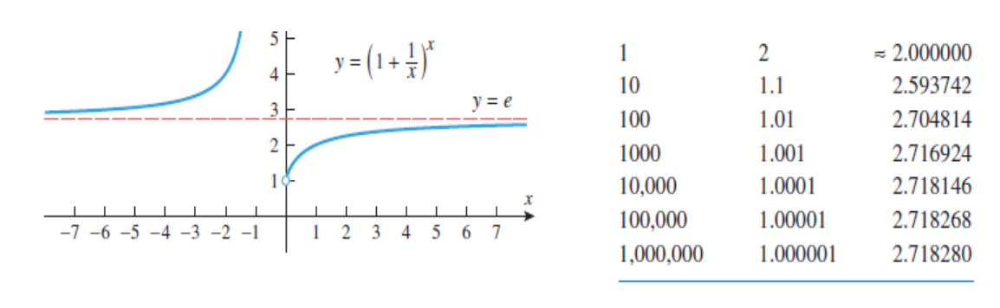

In this section we will obtain derivative formulas for logarithmic functions, and we will explain why the natural logarithm function is preferred over logarithms with other bases in calculus.
Бројот e
Константата e се јавува како константа кон која се приближуваат вредностите на функцијата
`y = (1+ 1/x)^x`
`lim_(x->+oo) = (1+ 1/x)^x = e`, `lim_(x->-oo) = (1+ 1/x)^x = e`, `lim_(v->0) = (1 + v)^(1/v) = e`
Експоненцијални и логаритамски функции
Потсетување:
`lim_(x->+oo) e^x = +oo`, `lim_(x->-oo) e^x = 0`, `lim_(x->+oo) lnx = +oo`, `lim_(x->0^+) lnx = -oo`
Изводи од експоненцијални и логаритамски функции
Во овој дел, ќе покажеме дека `f(x) = log_bx` е диференцијабилна функција за `x > 0` и `b > 0` `(b != 1)`. За определување на `f ′(x)` ќе користиме дефиниција за извод на `f(x)`. За да го пресметаме лимесот, ќе го искористиме фактот дека `log_b x` е непрекината функција и ќе искористиме дека
`lim_(v->0) = (1+ v)^(1/v) = e`
`(log_bx)^' = lim_(w->x) (log_bw - log_bx)/(w-x) = lim_(w->x) [1/(w-x) * log_b(w/x)]`
... ... ... ...
`(log_bx)^' = 1/x log_be = 1/x * lne/lnb = 1/x * 1/lnb, x>0`
Kога `b = e` имаме
`lnx = 1/x`
Пример 1. Дали функцијата `y = ln x` има хоризонтална тангента?
Решение.
За да има хоризонтална тангента првиот извод треба да е`0` односно `(lnx)^' = 0`, но како `(lnx)^' = 1/x, x>0` следи дека `y = lnx` нема хоризонтална тангента.
Пример 2. Најди `(ln(x^2 + 1))^'`
`= 1/(x^2 +1 ) * 2x = 2x/(x^2 +1)`
Пример 3. Најди `(lnx^2sinx/sqrt(1 + x))^'`
Решение.
`ln((x^2sinx)/sqrt(1 + x))^' = (2lnx + lnsinx - 1/2 ln(1+x))^'`
`= 2/x + 1/sinx * (sinx)^' - 1/2 * 1/(1 + x)`
` = 2/x + cosx/sinx - 1/(2(1 +x))`
`= 2/x + cotx -1/(2 + 2x)`
Пример 4. Најди `(lnabs(x))^'`
Решение `D_f = RR \ 0`
За `x>0` `f(x) = lnx` па `f^'(x) = 1/x`
За `x<0` `f(x)=ln(-x)` па `f^'(x)=1/(-x)(-x)^'=1/x`
Значи, добиваме дека:
`(lnabs(x))^' = 1/x`
Пример 5. Најди `(lnabs(sinx))^'`
Решение
`= 1/sinx * (sinx)^' = 1/sinx * cosx = cotx`
Пример 6. Најди `y^'` ако `y= (x^2 root(3)(7x - 14))/(x^2 + 1)^4`
Решение Изводот `y^′` може да се добие со користење на добро познатите правила за извод од количник и производ. Во овој случај, постапката ќе биде поедноставена, ако прво логаритмираме, а потоа диференцираме користејќи ја постапката за имплицитно диференцирање.
`ln(y) = ln(x^2) + ln(root(3)(7x - 14)) - ln (x^2 + 1)^4`
`ln(y) = 2ln(x) + 1/3ln(7x - 14) - 4ln (x^2 + 1)`
`(ln(y))^' = 2*1/x + 1/3* 1/(7x - 14)*(7x - 14)^' - 4 * 1/(x^2 + 1) * (x^2 +1)^'`
`1/y dy/dx = 2/x + 1/(3(x - 2)) - (8x)/(x^2 + 1)`
`dy/dx = y(2/x + 1/(3(x - 2)) - (8x)/(x^2 + 1))`
`dy/dx = (x^2 root(3)(7x - 14))/(x^2 + 1)^4 (2/x + 1/(3(x - 2)) - (8x)/(x^2 + 1))`
Правило за извод од степенска функција со степен реален број
Теорема 1
Ако `r` е било кој реален број, тогаш
`(x^r)^' = rx^(r-1)`
Доказ.
Бидејќи `y = x^r`, имаме `lnabs(y) = r ln(x)`.
Со имплицитно диференцирање добиваме
`1/y dy/dx = r 1/x`
`dy/dx = r y/x = r x^r/x = rx^(r-1)`
Пример 7.
`(x^pi)^' = pi x^ (pi-1)`
`(x^sqrt(2))^' = sqrt(2) x^ (sqrt(2)-1)`
Извод од експоненцијална функција
Досега ја најдовме формулата за извод на логаритамска функција. Добивме дека
`(log_bx)^' = 1/x 1/lnb, x>0` и `(lnx)^' = 1/x, x> 0`
За да најдеме извод на експоненцијална функција, ќе искористиме дека експоненцијалната функција е инверзна на логаритамската и ќе го искористиме имплицитно диференцирање. Имено,
`y = b^x harr x = log_by; x in RR, y>0`
`1 = 1/(ylnb) * dy/dx`
`dy/dx = ylnb = b^xlnb`
`(b^x)^' = b^xlnb`
Во случај кога `b = e` имаме:
`(e^x)^' = e^xlne = e^x`
Пример 8.
`(2^x)^' = 2^xln2`
`(e^(-2x))^' = e^(-2x) * (-2x)^' = -2e^(-2x)`
`(e^(x^3))^' = e^(x^3) * (x^3)^' = 3x^2e^(x^3)`
`(e^(cosx))^' = e^(cosx) * (cosx)^' = -sinxe^(cosx)`
Функциите од облик `f (x) = u^v` во кои `u` и `v` се неконстантни функции од `x` не се ниту експоненцијални ниту степенски. Функциите од овој облик се диференцираат со логаритамско диференцирање.
Пример 9. Со помош на логаритамско диференцирање најди `d/dx[(x^2 + 1)^sinx]`
Решение.
Нека `y = (x^2 +1)^sinx`
Тогаш `lny = ln(x^2 +1)^sinx = sinxln(x^2 +1)`
Со диференцирање на двете страни по `x` добиваме
`1/y dy/dx = cosxln(x^2 + 1) + 2xsinx 1/(x^2 + 1)`
Според тоа
`dy/dx = (x^2 +1)^sinx [cosxln(x^2 + 1) + 2xsinx 1/(x^2 + 1)]`